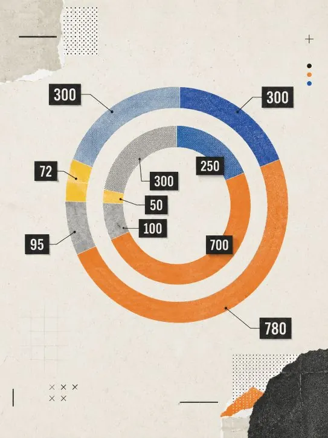
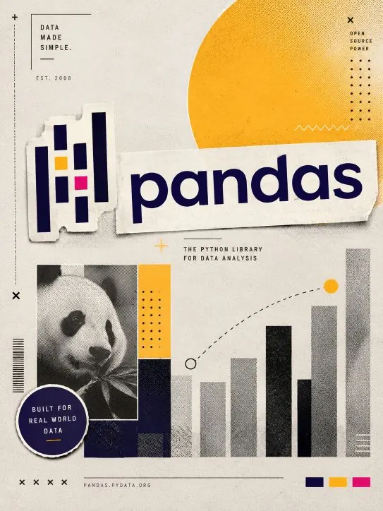
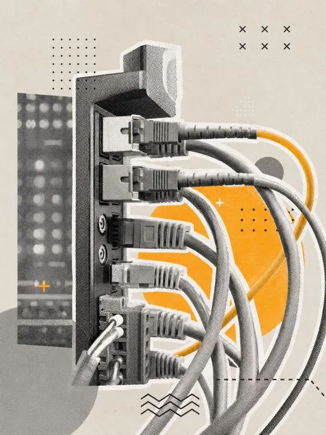
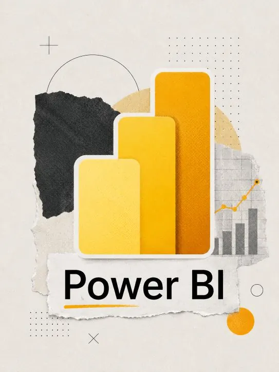
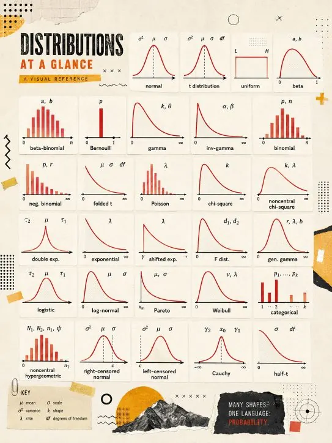
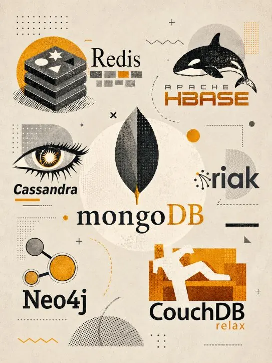
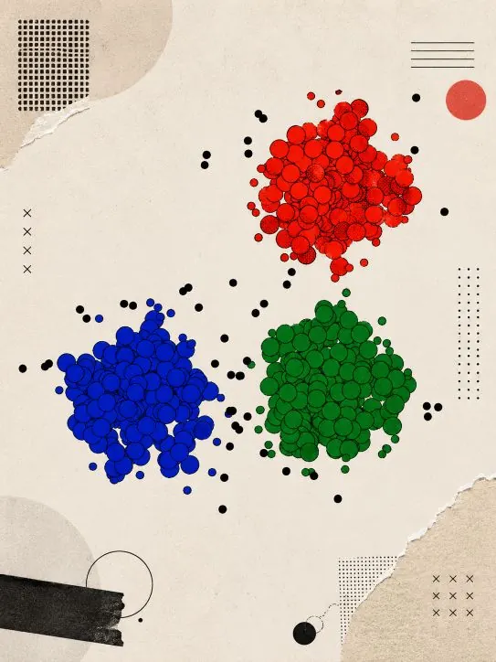
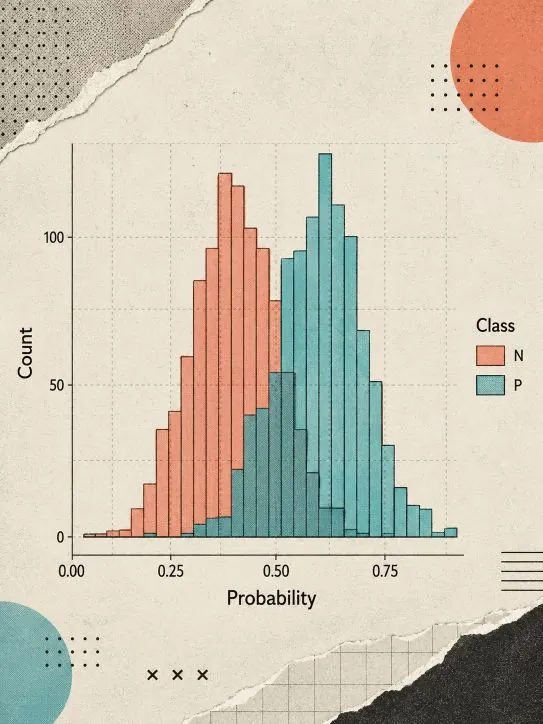
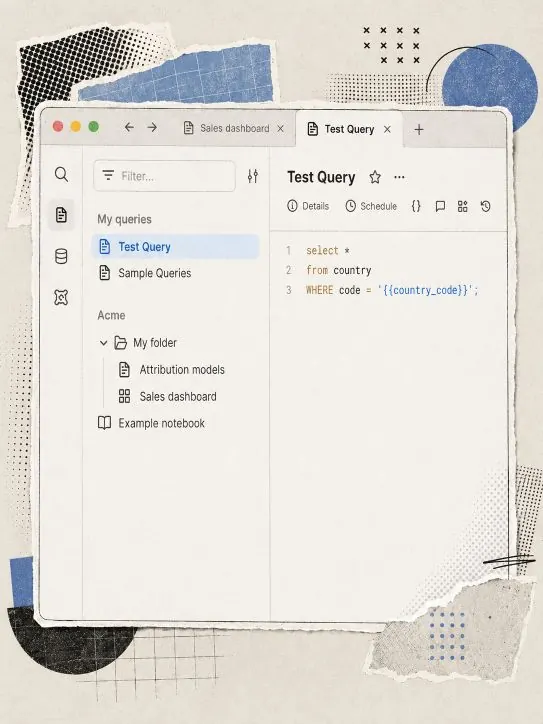

Proyecto 09 · Machine Learning
Modelo Machine Learning · Fraude con Regresión Logística
Clasificación supervisada mediante regresión logística para la detección de fraude con tarjeta de crédito.
CONTEXTO Y OBJETIVO
Modelar la probabilidad de fraude desde variables transaccionales y revisar qué señales aportan más a una clasificación supervisada.
DATOS Y DIAGNÓSTICO
- Preparación de variables para entrenamiento supervisado.
- Aplicación de regresión logística como baseline interpretable.
- Lectura de desempeño, clasificación y contribución de variables para evaluar señales de fraude.
ENTREGA Y APRENDIZAJE
La entrega muestra el flujo completo de un modelo supervisado interpretable, con implementación en SPSS Modeler y soporte comparativo en Python.